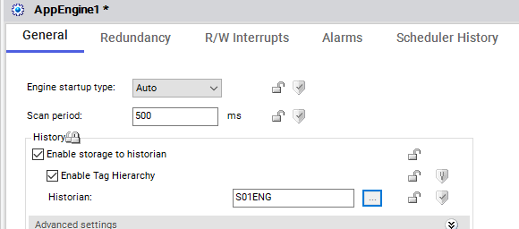
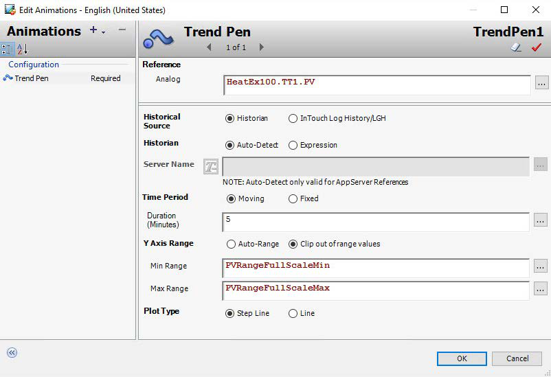
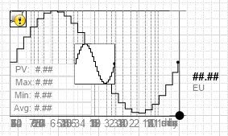
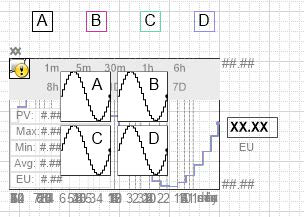

The Trend Pen icon in the Graphic Editor Tools pane — a small line graph with a vertical cursor (page 385)
Source: AVEVA InTouch for System Platform 2023 Training Manual, Module 6, Section 1–2 (pages 381–386)
This lesson covers the fundamentals of historization in Application Server and introduces the Trend Pen element for real-time trending in HMI graphics.
Reference: Module 6, Section 1–2 (pages 381–386)
Module 6 — Trend Visualization — brings together several related topics that enable operators to view process data over time. In this lesson you will learn how Application Server historizes data and how the Trend Pen element provides real-time trending in InTouch graphics. Subsequent lessons build on these concepts with multi-pen trends, trend popups, and Historian Client integration.
Reference: Module 6, Section 1 (pages 383–384)
Application Server uses a distributed history architecture to log process data. Each engine in a Galaxy is configured to send its history data to a single Historian database. In turn, each Historian can receive data from only one Galaxy — making the relationship between the two a strict one-to-one mapping.
When an object attribute is historized, a corresponding Historian tag is created (also a one-to-one mapping). Every time that attribute updates, the host engine pushes the new value, timestamp, and quality to the Historian for storage. The AppEngine's History area is where you enable storage and specify which Historian to use.

Not every attribute type can be historized. The following data types are supported:
| Data Type | Category | Historian Mapping |
|---|---|---|
| Float | Numerical | Historian Float |
| Double | Numerical | Historian Float |
| Integer | Numerical | Historian Integer |
| Boolean | Non-numerical | Historian Integer |
| String – Unicode | Non-numerical | Historian String |
| CustomEnum | Non-numerical | Historian Integer |
| ElapsedTime | Numerical | Historian Float (converted to seconds) |
Reference: Module 6, Section 2 (pages 385–386)
Real-time trending helps operators monitor how process values change over time. By seeing the current value alongside historical data, operators can project where a value is headed and decide when intervention is needed. The Trend Pen element is the building block for this capability.
You will find the Trend Pen in the Tools pane of the Graphic Editor. Once placed on the canvas, the Edit Animations dialog lets you configure the data reference, Historian source, time period, Y-axis range, and plot type. At runtime, the Trend Pen uses backfill — it immediately fills with historical data so the operator never sees an empty chart — and then scrolls left as live values arrive.

Reference: Module 6, Section 2 (pages 386)
The Situational Awareness Library provides two pre-built symbols that wrap the Trend Pen for common use cases: SA_Trend_SinglePen and SA_Trend_MultiPen.
This symbol configures a single pen to display real-time and historical data. You can choose from wizard options such as Tail Trend (a simple floating pen) or Simple Trend (a one-pen trend with optional grid, timescale, and meter). Custom properties let you set the data source, trend period in minutes, and more.

This symbol displays multiple pens (up to four) on a single chart. Each pen can be independently configured for data source, line weight, color, and visibility. The four pens use predefined styles: Trend_PenA through Trend_PenD.

1. In Application Server's distributed history architecture, what is the relationship between a Galaxy and a Historian?
A single Historian can receive historical data from only one Galaxy, and a single engine sends its history to only one Historian — a strict one-to-one relationship.
2. Which data types are not supported for historization in Application Server?
Arrays — whether entire arrays or portions of arrays — are not supported for historization.
3. What is "backfill" in the context of the Trend Pen element?
Backfill is the process where the Trend Pen immediately loads historical data at runtime so the chart is never empty, then switches to live updates that scroll the chart to the left.
4. How many pens can the SA_Trend_MultiPen symbol display simultaneously?
A maximum of four pens, using the predefined styles Trend_PenA through Trend_PenD.
5. Where is the Trend Pen element located in the Graphic Editor?
In the Tools pane of the Graphic Editor, represented by a small line-graph icon with a vertical cursor line.
Module 6 — Trend Visualization. AVEVA InTouch for System Platform 2023 Training.
Next: Lesson 31 — Lab 17 – Adding Trending to Graphics